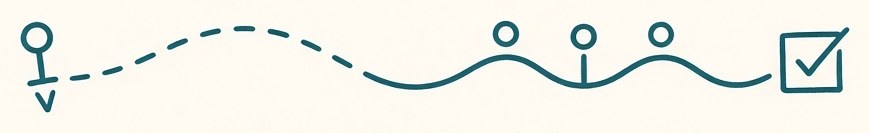
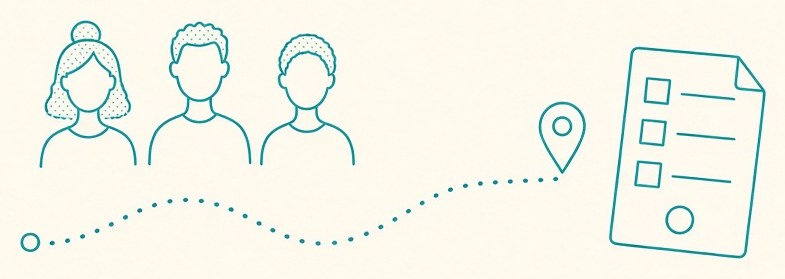
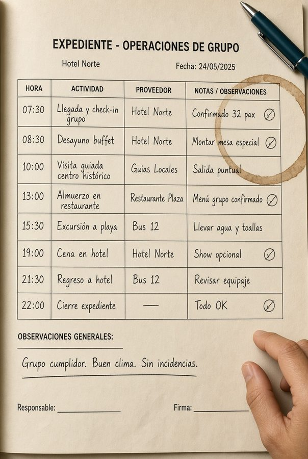

01 · Antes
Prevenir
El rooming no vive en la cabeza. Timing con margen de verdad. Briefing que el hotel y el conductor pueden ejecutar.


Hospitality and Group Events Coordination School
Si el martes sales con 40 personas, esto es para ti. Leisure, incentivo, congreso, evento, crucero o deporte. No es un máster. No es solo MICE. Es el oficio de tierra.


El grupo no espera a que termines de improvisar. El check-in se gana en el papel. El método cabe ahí.

Para quién
Acompañas · campo
Tour leader, on-site, hospitality desk. El grupo te mira a ti cuando el plan se tuerce.
Preparas · mesa
Quien escribe el briefing y vive el WhatsApp a las 6:10. Jefas de equipo de DMC.
El grupo
Vacacional, incentivo, congreso, evento, crucero, deporte. No hace falta venir de MICE.
Método Tierra
Andrea lleva más de quince años coordinando grupos. El método sale de ahí: tres tiempos, el mismo expediente, cero heroísmo.
01 · Antes
El rooming no vive en la cabeza. Timing con margen de verdad. Briefing que el hotel y el conductor pueden ejecutar.
02 · Durante
Vuelo tarde, queja, proveedor que no llega. A quién llamas. Qué no dices al grupo. Plan B en diez minutos.
03 · Después
Handover a las 23:40. Debrief corto. Lo que se aprende se escribe, para que el siguiente grupo no pague el mismo error.

Quién imparte
CEO de Por Aquí Conmigo. Más de 15 años en la calle y en la mesa: leisure, incentivo, reuniones, eventos, cruceros. El martes sigue saliendo con grupos.
La escuela nace de eso. No de un temario. De un método que ella usa el martes y te presta el lunes.

En la calle ya
Palma · leisure
El rooming salía de la cabeza y el hotel me pillaba siempre. Con el expediente de Andrea el check-in dura lo que tiene que durar. Mis grupos salen más tranquilos. Yo también.
Madrid · incoming
En mesa vivíamos del WhatsApp a las 6:10. Ahora el briefing lo entiende el conductor. El equipo de campo dejó de llamarme para preguntar lo que ya estaba escrito.
Sevilla · incentivo
Nos retrasa el vuelo y se caía la cena. Antes improvisaba. Con la cadena de mando supe a quién llamar y qué no decir al grupo. Salvamos la noche sin que ellos lo notaran.
La edición
No hay inscripción automática. Hay una conversación: ciudad, tipo de grupo, y si esta cohorte es la tuya.
Pedir plazaOficio
No hace falta venir de MICE. Hace falta haber estado al frente de un grupo — o querer estarlo sin improvisar.
Antes de que salga
En la calle
Pieza de aula
Anonimizado. Distinto tipo de grupo cada edición.

El detalle se cuenta en clase. El método es el mismo el lunes en mesa y el jueves en el muelle.
Programa
No es un PDF de doce páginas. Es un oficio, día a día. El simulacro usa expedientes de varios tipos de grupo, no solo de congreso.
La semana presencial
Leer el expediente. Marcar agujeros.
Timing real. Reloj en mano.
Hospitalidad y queja.
Simulacro. Vuelo tarde.
Handover y debrief.
La fecha de aula de la cohorte cero la cierra Andrea al hablar. No publicamos un calendario fantasma.
Presencial
Cinco días en Barcelona para entrenar con volumen y calle. El contenido vale si trabajas en Madrid, Valencia, Sevilla, Málaga, Canarias, Baleares o el norte.
Las dos sesiones online (antes y después) se hacen desde tu ciudad. Si no puedes desplazarte esa semana: lo hablamos. El módulo de calle pide estar.
Quién imparte
Más de 15 años coordinando. La ciudad del aula no es la credencial. El Método Tierra sí.
Hablar con AndreaEdición
Cohorte cero. Cinco días en Barcelona + dos encuentros online. Precio de fundadores te lo dice ella. Cuéntanos ciudad y qué grupos mueves.